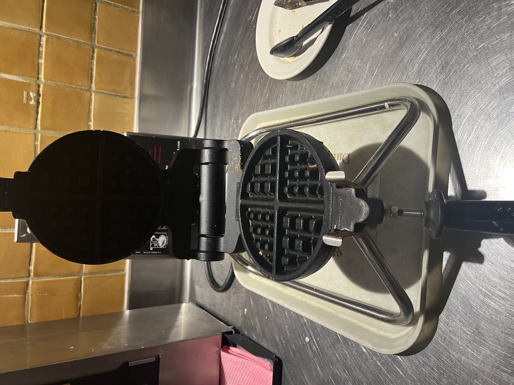
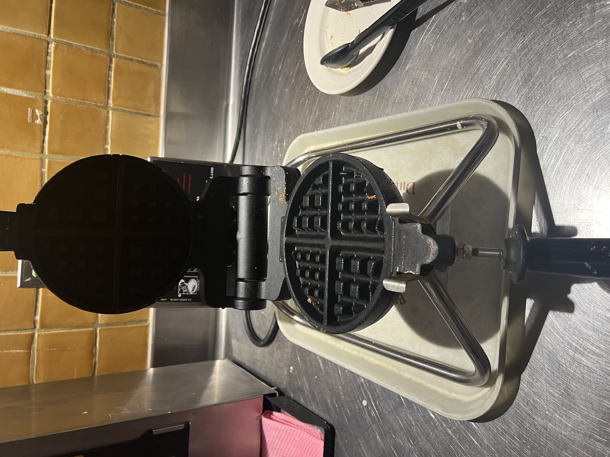
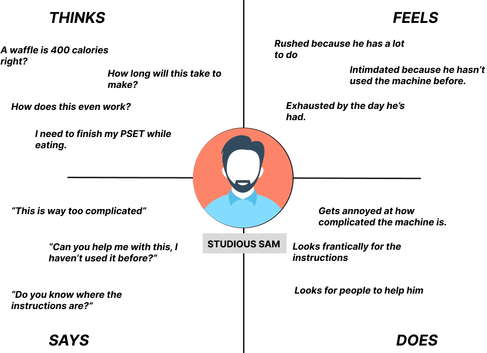
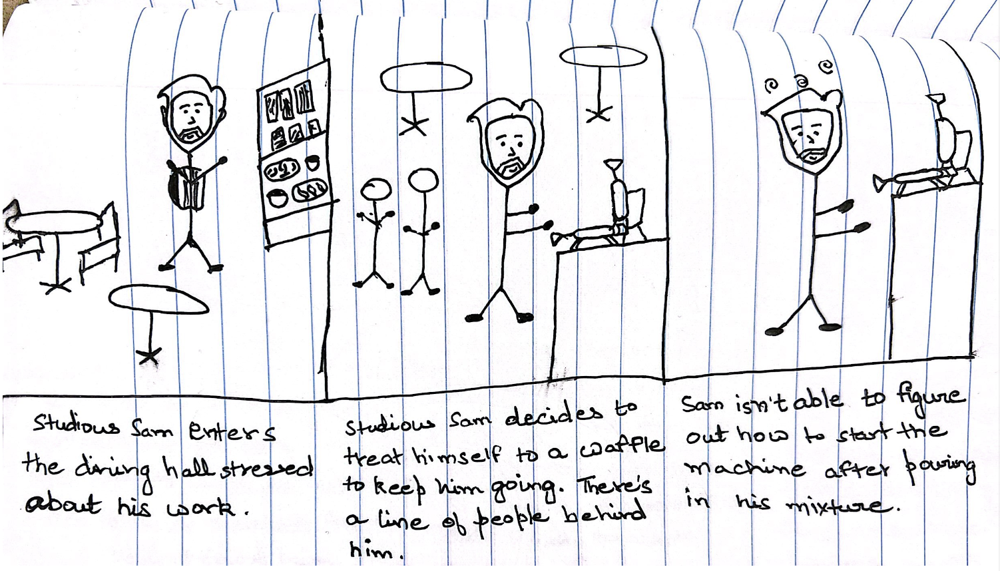
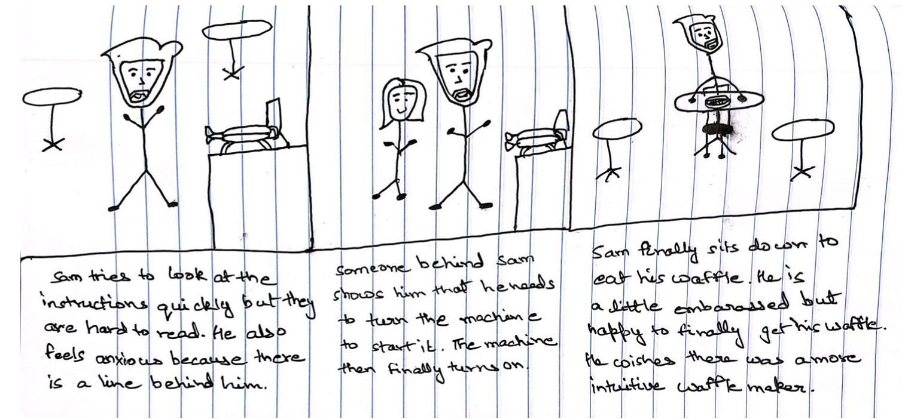

Personas and Storyboarding
ASSIGNMENT 1, USER INTERFACES AND USER DESIGN FALL 2022
INTERFACE
Waffle Maker
The interface I picked the waffle maker at the Vdub for this project. This was because the interface had some non-obvious and slightly complex functions that i thought would be ideal for observation.
 

QUESTIONS
- How often do you use this machine?
- How is your experience using this machine?
- What are some parts you like or dislike about the experience?
- Would you recommend it to someone looking to buy a Waffle Maker?
ANSWERS
- I only use it occasionally. Waffles aren't usually what i eat for any meal. Maybe more often when I come for breakfast so maybe like 3-4 times a week
- Yeah its a bit confusing like I didn't know I had to flip it over and I was just standing there for a minute before someone told me.
- It's kind of fun. I like pouring the mixture and like making it myself.
- I don't really like how its made. Like there's a lot of stuff going on and it looks kind of intimidating.
- I think its hard if you're using it for the first time. I see the instructions on the back but its covered by the waffle maker. Also its kind of dark and hard to read.
KEY OBSERVATIONS
I recorded mixed observations from the users. The device was used occassionally by most users with one first time user as well. Most of them mentioned a different experience with the interface the first time they used it which might imply a learning curve. The interface also has some steps before and after using it(making mixture, adding toppings) which made it a part of a bigger process. One user placed more emphasis on the process. At the end, 2/3 users said that they would recommend the device to another person looking to buy.
USER PERSONAS AND EMPATHY MAPS
Persona One: Careless Cara 
Persona Two: Studious Sam
STORYBOARD
 